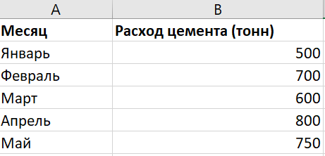
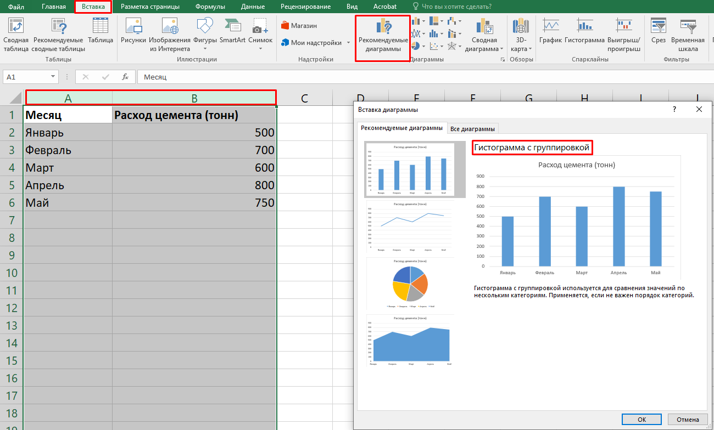

Простые диаграммы

Андрей, ты все ближе к финишу! В этом уроке мы научимся создавать простые диаграммы в Excel, чтобы визуализировать данные. Для чего это нужно? Иногда таблицы с цифрами сложно воспринимать на глаз, и именно диаграммы помогают легче понять соотношения и тренды данных. Мы сосредоточимся на одном из самых популярных типов диаграмм — столбчатых. Столбчатые графики позволяют наглядно увидеть, как различные категории соотносятся друг с другом. После завершения этого урока ты будешь уверенно создавать столбчатые диаграммы для различных строительных материалов и других данных, что позволит лучше анализировать и представлять информацию. Приступим!
Что такое диаграмма
Диаграмма — это графическое представление данных, которое помогает нам увидеть закономерности, тенденции и соотношения в таблицах.
Почему важно использовать диаграммы
- Упрощают восприятие данных.
- Позволяют быстро анализировать результаты.
- Помогают визуализировать данные для отчетности или презентаций.

Столбчатая диаграмма
Столбчатая диаграмма — это график, на котором данные представлены в виде столбцов, высота которых зависит от значения данных.
Типы столбчатых диаграмм:
- Вертикальная столбчатая диаграмма — отображает данные вертикальными столбцами.
- Горизонтальная столбчатая диаграмма — подходит для категориальных данных, когда важно увидеть соотношение разных категорий по горизонтали.
Как создать столбчатую диаграмму:
- Выделяем диапазон данных, который хотим отобразить (например, таблицу с расходом цемента).
- Переходим во вкладку «Вставка».
- Выбираем «Столбчатую диаграмму».
- Настроим диаграмму, добавив заголовки, оси и легенду для лучшего восприятия.
Практическая часть
Теперь давай применим полученные знания на практике. Представим, что у нас есть таблица с расходом цемента на строительном объекте, и мы хотим визуализировать данные, чтобы легче оценить расход по месяцам:

Чтобы создать столбчатую диаграмму, сначала выделим данные в таблице. Далее, перейдем во вкладку «Вставка», выберем тип диаграммы «Столбчатая» и вставим диаграмму на лист.

Теперь у нас есть наглядное представление расхода цемента по месяцам, где на оси X будут месяца, а на оси Y — расход цемента в тоннах. Мы можем настроить диаграмму, добавив заголовок, оси и другие элементы для лучшего восприятия.
Отлично! Теперь ты можешь создавать столбчатые диаграммы для визуализации данных, что поможет лучше анализировать информацию и представлять результаты. Удачи с выполнением домашнего задания!